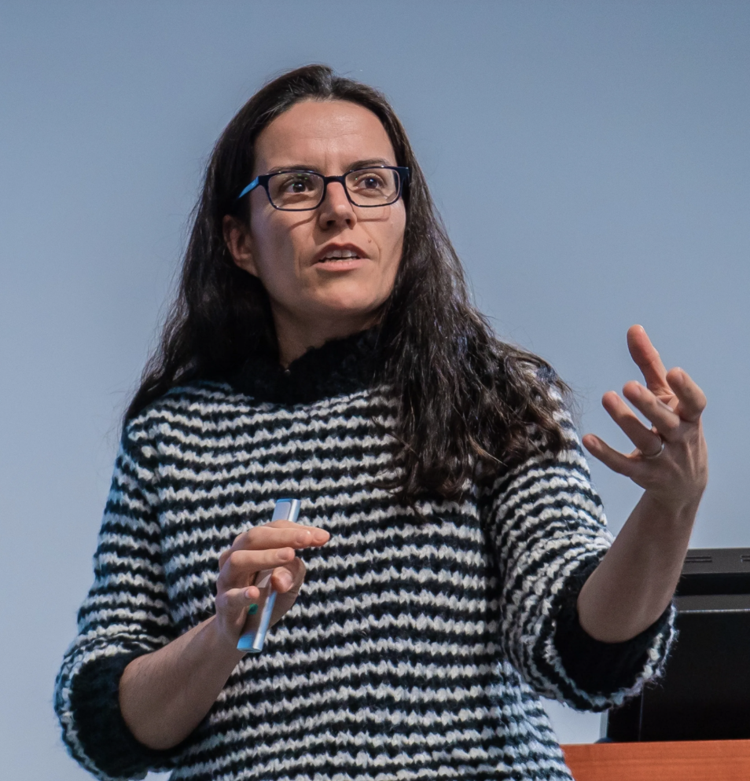

Department of Biomedical Informatics & Data Science · Yale School of Medicine
We develop interpretable machine learning and mechanistic models to decode T and B cell function in cancer and autoimmune diseases — bridging deep learning, biophysics, and computational immunology.

Principal Investigator
Associate Professor · Dept. of Biomedical Informatics & Data Science · Yale School of Medicine
Prof. Rodríguez Martínez earned her PhD in physics at the Institut d'Astrophysique de Paris before transitioning to computational biology during postdoctoral work at the Weizmann Institute of Science (Israel) and Columbia University (USA). She then spent over a decade at IBM Research Europe (Switzerland) as Technical Leader of Systems Biology, building a world-leading team in computational systems biology and leading major EU-funded consortia on prostate and pediatric cancers.
She joined Yale School of Medicine as Associate Professor in the new Department of Biomedical Informatics & Data Science in May 2024. Her research integrates mechanistic models and interpretable deep learning — including transformers, structural predictors, and generative AI — to decode how immune receptors function in cancer and autoimmune disease, and to guide the design of novel cell-based immunotherapies.
She serves on the editorial boards of ImmunoInformatics, Frontiers in Systems Biology, BMC Bioinformatics, and IEEE Transactions on Molecular, Biological, and Multi-Scale Communications, and is a frequent speaker at ISMB, ECCB, and the Society for Mathematical Biology.
Join the Lab
Open positions for postdocs, graduate students, and undergraduates. We especially welcome scientists from quantitative backgrounds — physics, mathematics, computer science — with an interest in biology and immunology.